Witam,
Mam do sprzedania Volkswagena Passata kombi z 2019 roku, pierwsza rejestracja styczeń 2020r., wyposażonego w dynamiczny i oszczędny silnik benzynowy 1.5 o mocy 150KM. Samochód oferuje komfortową jazdę dla 5 osób, idealny zarówno na rodzinne wyjazdy, jak i codzienne użytkowanie.
Samochód bezwypadkowy, oryginalny lakier na całym nadwoziu, wszystkie śruby od drzwi, maski i tylnej klapy nie posiadają śladów odkręcania. Wszystkie szyby również oryginalne.
Jest świeżo po przeglądzie, wymieniony olej oraz wszystkie filtry, dodatkowo wymienione świece zapłonowe. Serwisowany w ASO.
Wnętrze bardzo zadbane, tapicerka nie posiada żadnych przetarć ani dziur. Pojazd posiada normalne ślady użytkowania.
Bardzo bogate wyposażenie: wszystkie szyby i lusterka sterowane elektrycznie, lusterka podgrzewane, czujniki przód i tył, asystent zmiany pasa ruchu, aktywny adaptacyjny tempomat, sterowanie radia z kierownicy, klimatyzacja dwustrefowa, klimatyzowany schowek
Możliwość sprawdzenia na dowolnej stacji diagnostycznej.
Auto w praktycznym nadwoziu kombi, zapewnia dużo przestrzeni bagażowej i wygodę podróżowania. Silnik benzynowy gwarantuje płynną i ekonomiczną jazdę, a nowoczesna stylistyka Passata sprawia, że prezentuje się bardzo elegancko.
Samochód pochodzi z polskiego rynku, jest zadbany i gotowy do dalszej eksploatacji.
Zapraszam do obejrzenia samochodu w Warszawie oraz na jazdę próbną.
Wystawiam fakturę VAT 23%, kupujący zwolniony z podatku PCC 2%.
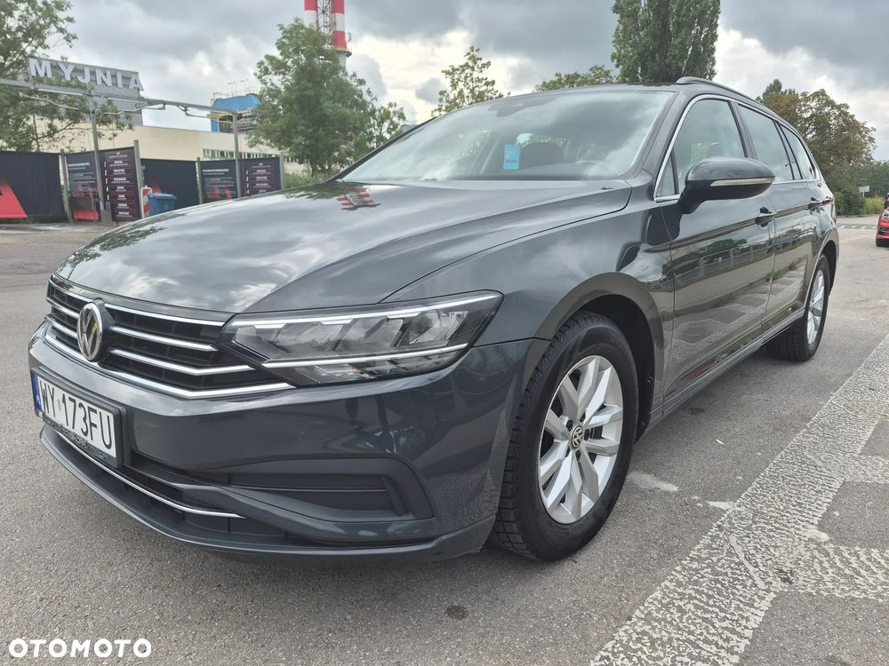
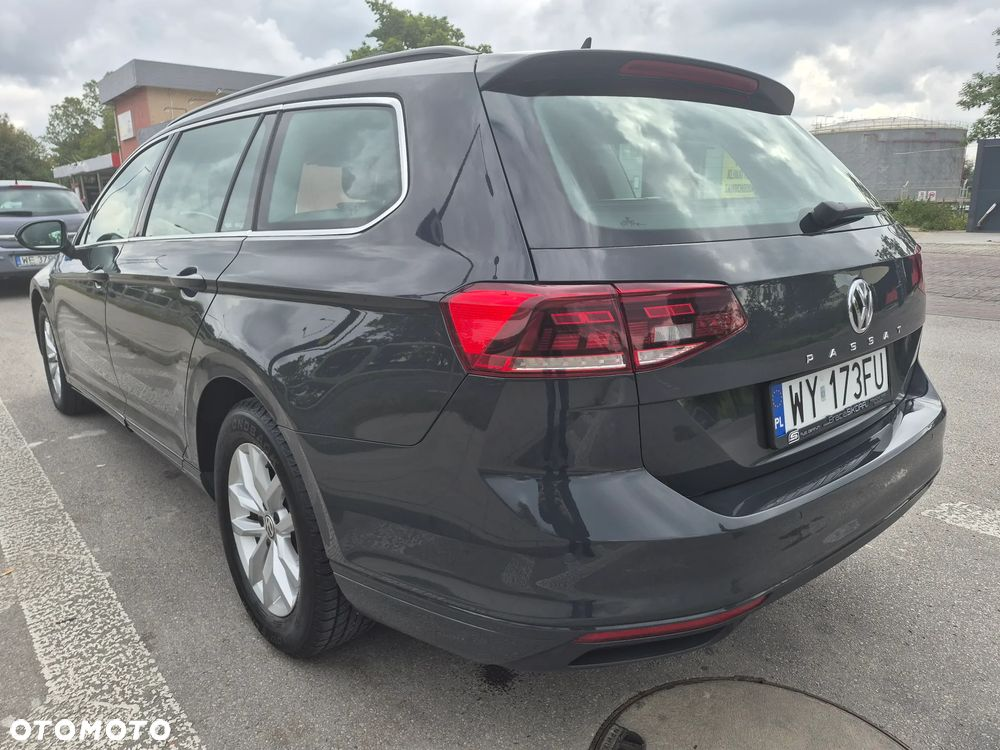
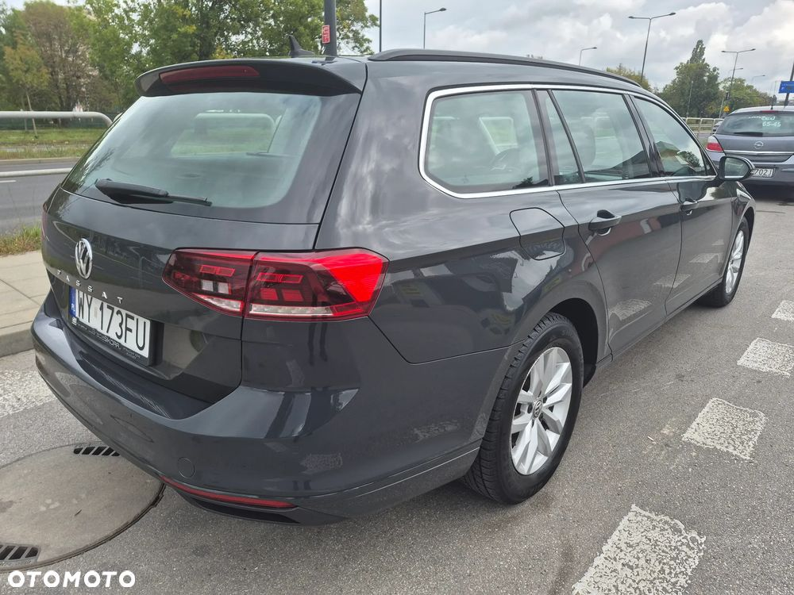
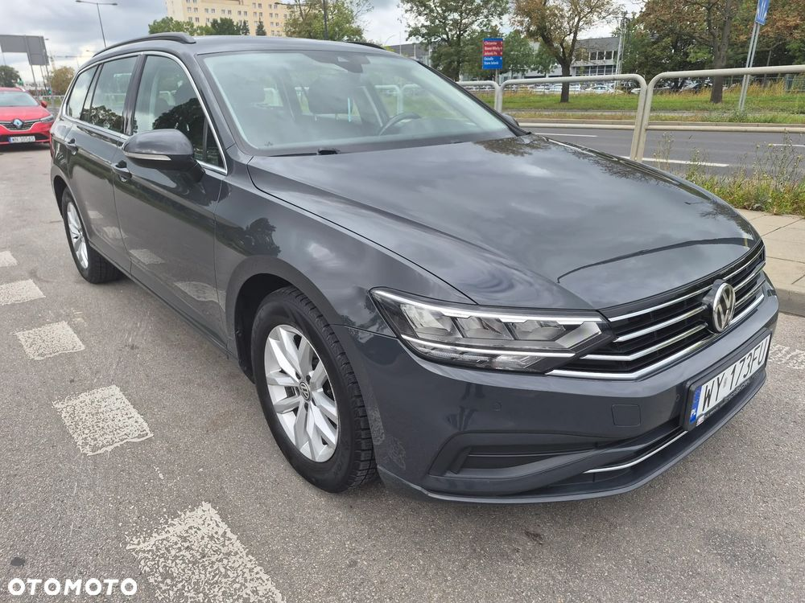
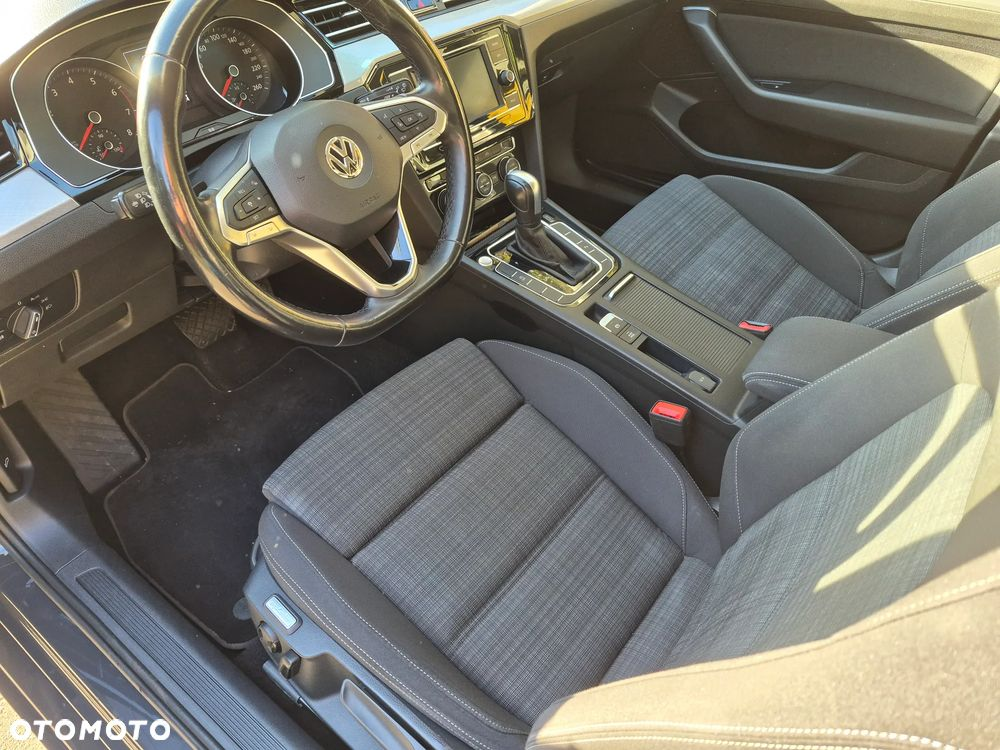
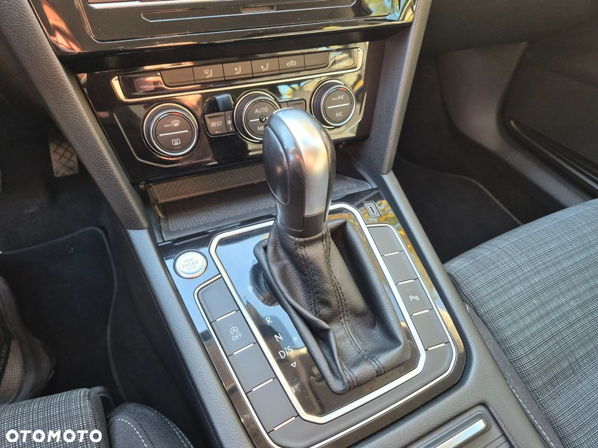
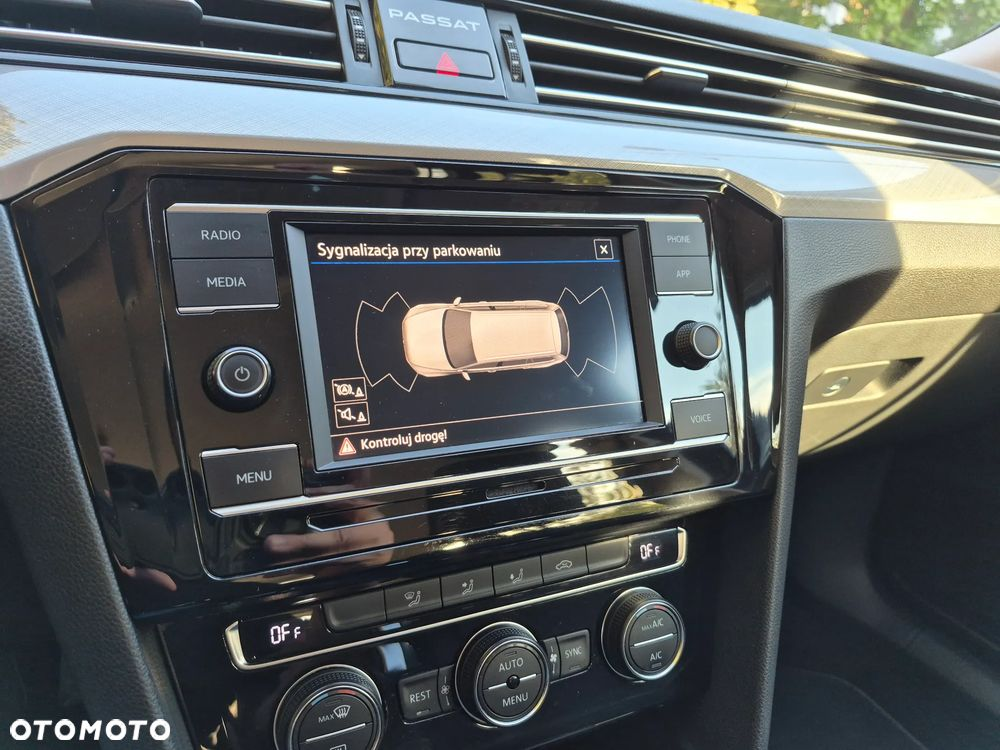
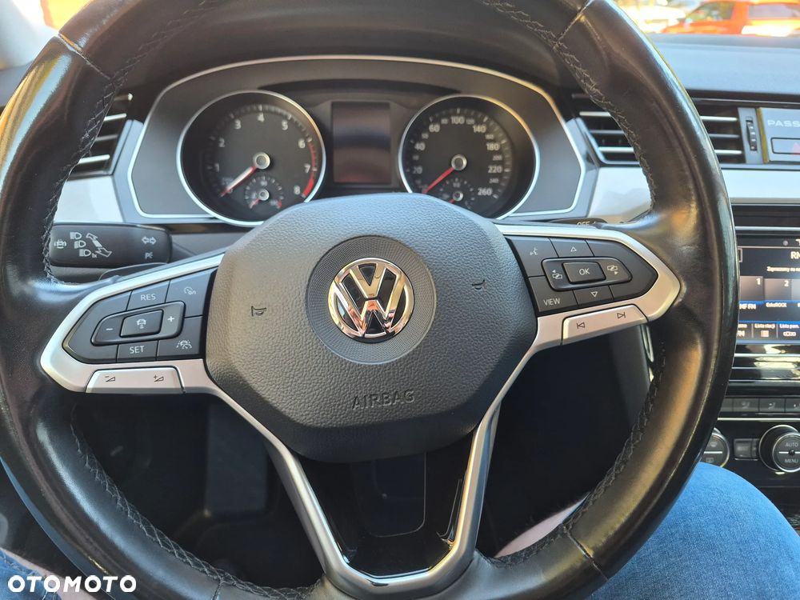
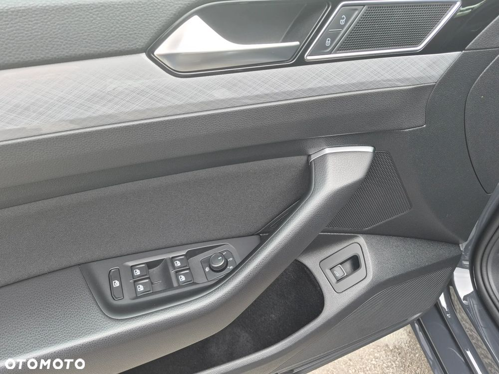
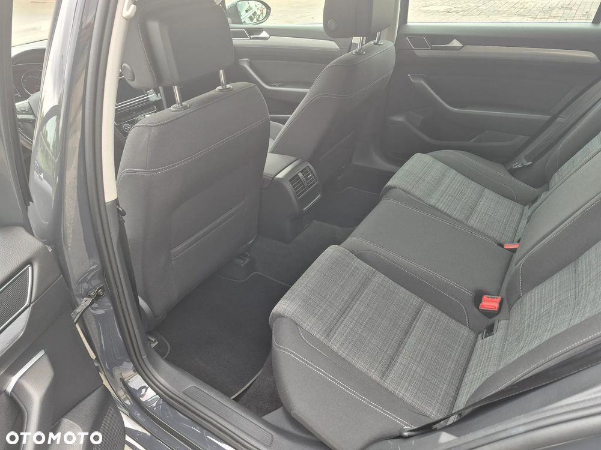
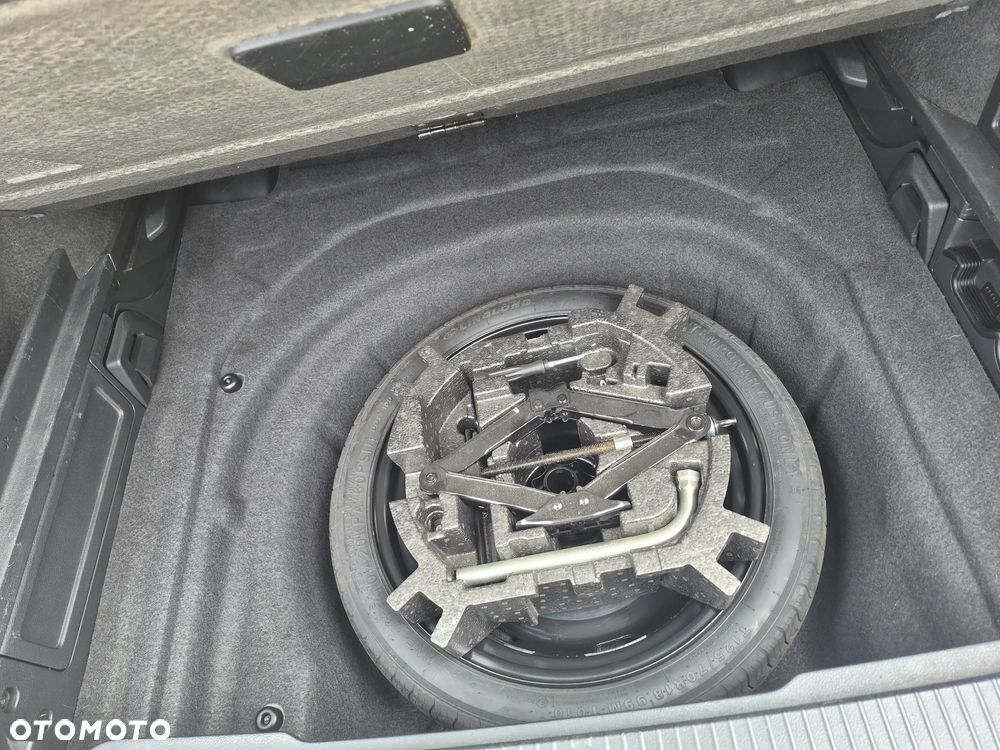
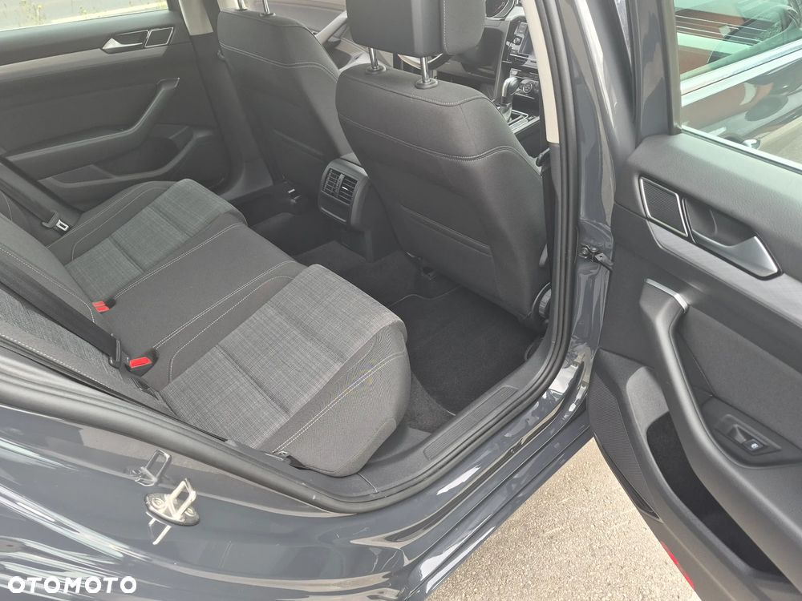
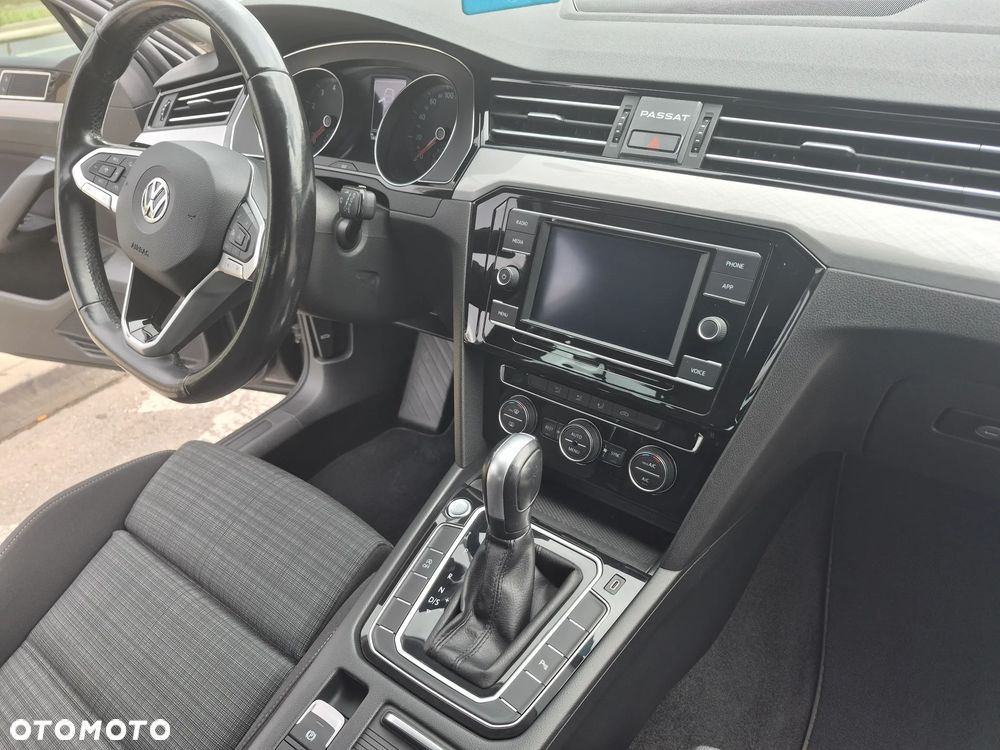
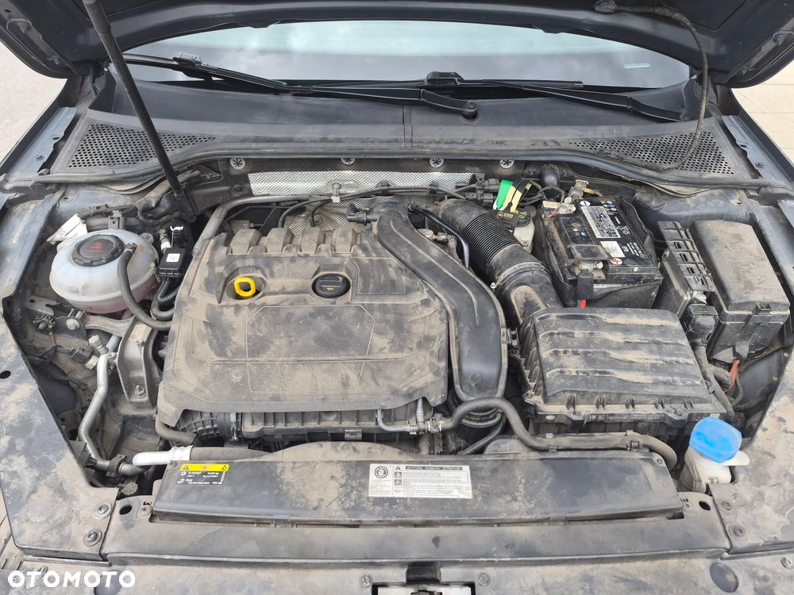